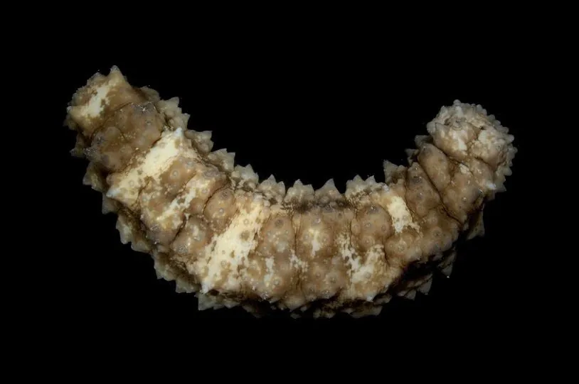

其他无脊椎动物 · 动物界
花刺参 Stichopus variegatus

体表有疣足和斑纹的大型海参，栖息于热带珊瑚礁沙底，舔食沉积物中的有机质，是南海重要的食用海参。
- 分类
- 门棘皮动物门纲海参纲目楯手目科刺参科属刺参属
- 栖息环境
- 潮间带下区至水深三十米的珊瑚礁沙底、礁坪与潟湖
- 地理分布
- 印度洋至西太平洋热带海区，包括中国南海、菲律宾、印度尼西亚和澳大利亚北部
- 保护级别
- 尚无国际公约级别保护；过度捕捞使野生资源明显下降
物种志
花刺参的体长可达三十至四十厘米，体呈长圆筒形，背面隆起，腹面平坦。它的背面散布着大小不等的疣足和肉刺，沿着背中线有两列较大的疣足，腹面则密布管足，用来爬行和附着。体色变化较大，有黄褐、灰绿、墨绿等底色，上面缀有深浅相间的斑块和网纹，花刺参之名由此而来。体壁厚实，富含胶原。
它分布于印度洋至西太平洋的热带海区，包括中国南海、菲律宾、印度尼西亚和澳大利亚北部，栖息在潮间带下区至水深三十米的珊瑚礁沙底、礁坪和潟湖，白天多藏在礁石下或沙中，夜间出来活动，用触手状的口部舔食沙泥中的有机碎屑、藻类和微生物。它是雌雄异体，繁殖期在春夏，幼虫浮游后附着变态。它是南海重要的食用海参，肉质厚实，干制后是名贵海味，长期过度捕捞使野生资源明显下降，目前尚无国际公约级别的保护，中国已在部分海区实施禁捕和增殖放流。
形态与习性
- 体长可达三十至四十厘米，圆筒形
- 体表背面有疣足和肉刺，腹面密布管足
- 体色黄褐、灰绿或墨绿，缀斑块与网纹
- 栖息水层潮间带下区至水深三十米的礁区沙底
- 食性舔食沙泥中的有机碎屑、藻类和微生物
- 利用南海重要食用海参，干制后为名贵海味
趣味知识
- 它背上的疣足大小不一，像撒了一身小疙瘩。
- 它吃东西的方式是把沙泥舔进嘴里，只留下里面的有机碎屑。
- 遇到危险时它能把内脏从肛门排出，过后再慢慢长回来。